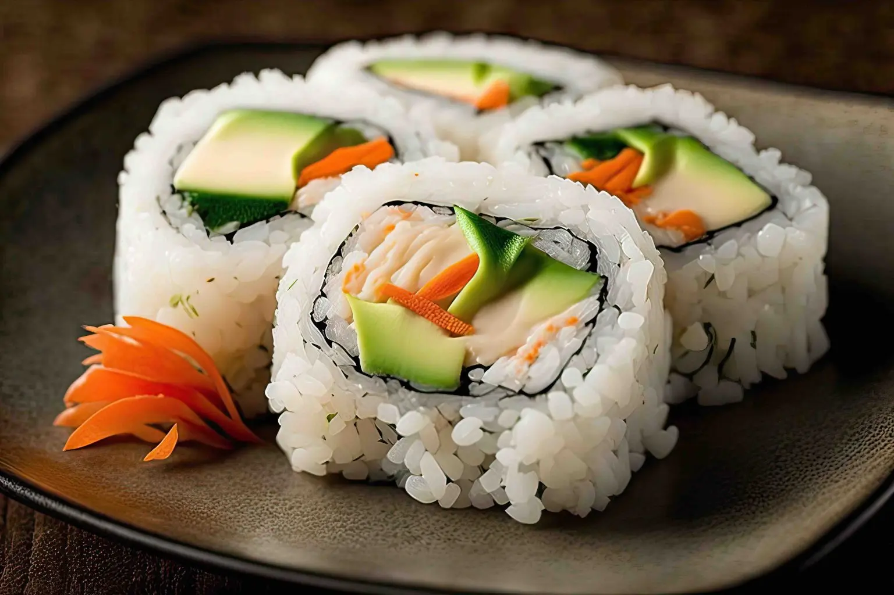
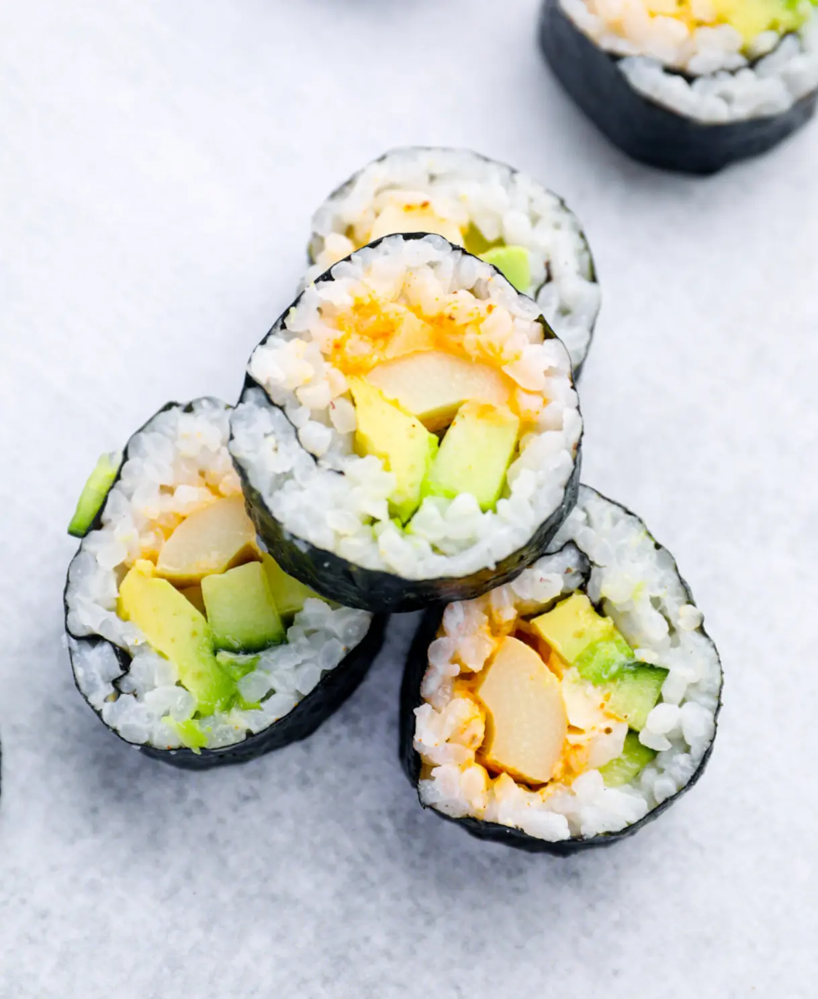

Home of the California Roll 🇨🇦➡️🇺🇸
By Andrena Yacoub, Bryan Vo – November 27, 2025 – Food Fun Facts
🍣 The Vancouver Origin of the California Roll
Believe it or not, one of the world’s most popular sushi creations — the California Roll — was actually born in Vancouver, Canada. In the 1970s, sushi was still new to most Western diners and the idea of eating raw fish felt intimidating. Traditional Japanese ingredients were hard to find in Canada, too. That’s when Hidekazu Tojo, a young chef from Kagoshima who moved to Vancouver in 1971, decided to make sushi approachable and, in doing so, changed the way the world eats.
Tojo first cooked at Maneki, a local Japanese restaurant, before opening his own acclaimed spot, Tojo’s Restaurant. Serving curious yet hesitant Canadians, he noticed that the fear stemmed from raw fish and the visible sheet of nori. Rather than insist on tradition, he saw an opportunity to innovate for the neighborhood he now called home.
Tojo flipped the script — literally. He rolled the sushi inside-out, hiding the seaweed within and placing the rice on the outside. At the time, this was unheard of in Japan, but it made the roll look familiar to Western guests. He filled it with cooked crab (or imitation crab), buttery avocado, and crisp cucumber. Avocado, especially, was a stroke of genius — a creamy, lush substitute for raw tuna that delivered the same indulgent texture without the intimidation.
The new creation quickly became a hit. Tojo named it the California Roll, inspired by the Californian customers who adored it and by the provenance of ingredients like avocado and crab, which were sourced from the Golden State. Before long, the roll was being replicated across the West Coast, especially in Los Angeles and San Francisco, acting as a friendly gateway to sushi culture during the 1980s.
Today, the California Roll is everywhere — from high-end omakase counters to grocery store grab-and-go sections — beloved by first-time sushi eaters and seasoned fans alike. Chef Tojo still runs his Vancouver restaurant and has been recognized by the Japanese government as a Culinary Ambassador for spreading authentic Japanese cuisine around the world.
What started as one chef’s clever bridge between cultures became a global phenomenon. So the next time you pick up a California Roll, remember: despite its name, its roots are proudly planted in Vancouver, British Columbia. 🇨🇦